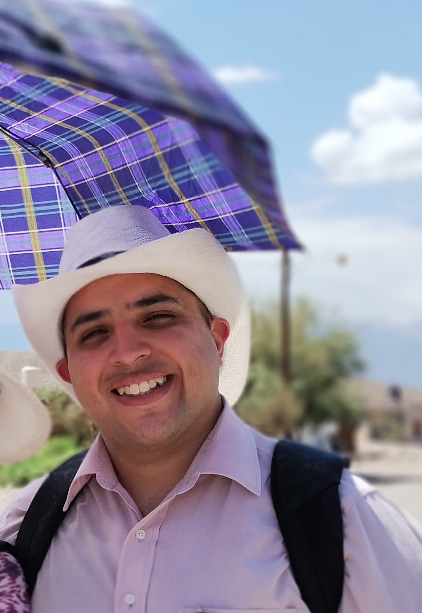

Datos Personales
- Nombre: Misael Frencia
- DNI: 40.404.404
- F. Nacimiento: 12-07-90
- Edad: 34 años
- Dirección: Av. Sabattini 1350
- Localidad: Río Cuarto, Cordoba
Experiencia Laboral
Pablo Lencina Muebles: Lustrado de muebles con laca poliuretanica
2013 - 2014:
- Teñido de muebles con tinta base
- Aplicacion de laca con soplete
- Fabricación de muebles en mdf
Marcos Maccari Servicios: Mantenimiento general de edilicias
2015 - 2016:
- Relevamiento de trabajos a realizar en inmueble y mobiliario
- Preparación de presupuestos
- Reparaciones en general (fontaneria, albañileria, electricidad, carpinteria)
Tamecor: Fabrica de muebles de melamina
2017 - Presente:
- Operario de maquinas
- Supervisor de producción
- Armado de muebles
Educación
- 2000 - 2005 Educación Basica: Completa
- 2006 - 2008 Educación EGB: Completa
- Colegio: Dr. Carlos Antonio Lucero Kelli
- 2009 - 2011 Educación Especializada: Completa
- Colegio: Dr. Carlos Antonio Lucero Kelli